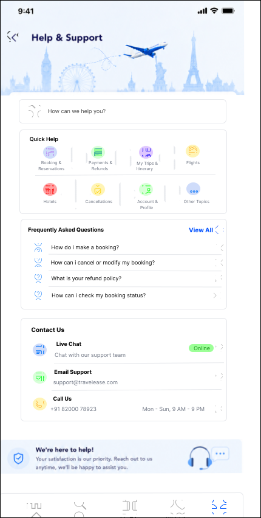

I design digital
experiences with
intent.
I'm Amaanali Popatwala — a UI/UX Designer creating clear, modern interfaces for mobile apps, websites and digital products.
BASED IN VADODARA, INDIA · AVAILABLE FOR FREELANCE
Work that makes
interfaces matter.
Three project stories are currently featured. Each project is presented around the interface, flow and visual decisions — not just a gallery of screens.


Design is not
decoration.
It's direction.
I'm Amaanali Popatwala, a UI/UX Designer focused on turning ideas into simple, structured and visually strong digital experiences.
My work combines interface design, visual hierarchy, wireframing and prototyping to create products that feel intentional from the first screen to the last interaction.
Built around
your product.
Focused design support for founders, small businesses and teams who need a clearer digital experience.
Mobile App UI/UX
User flows, wireframes, high-fidelity screens and clickable prototypes.
Website UI/UX
Modern web interfaces shaped around content, usability and business goals.
Dashboard Design
Structured interfaces for information-heavy products and workflows.
Design Systems
Reusable components, typography and visual rules for consistency.
Prototyping
Interactive flows that communicate how the final product should behave.
UI Refresh
Visual improvements for an existing product that needs a more modern interface.
A clear path from
idea → interface.
Discover
Goals, audience and context.
Research
Needs, patterns and opportunities.
Structure
Flows and information architecture.
Wireframe
Low-detail product structure.
Design
Polished visual interface.
Prototype
Connected interactive experience.
Let's make your
idea real.
Share your project, goals and timeline. I’ll review the brief and get back to you.